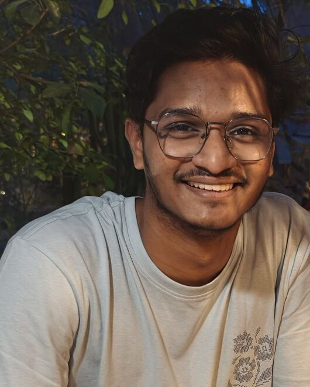
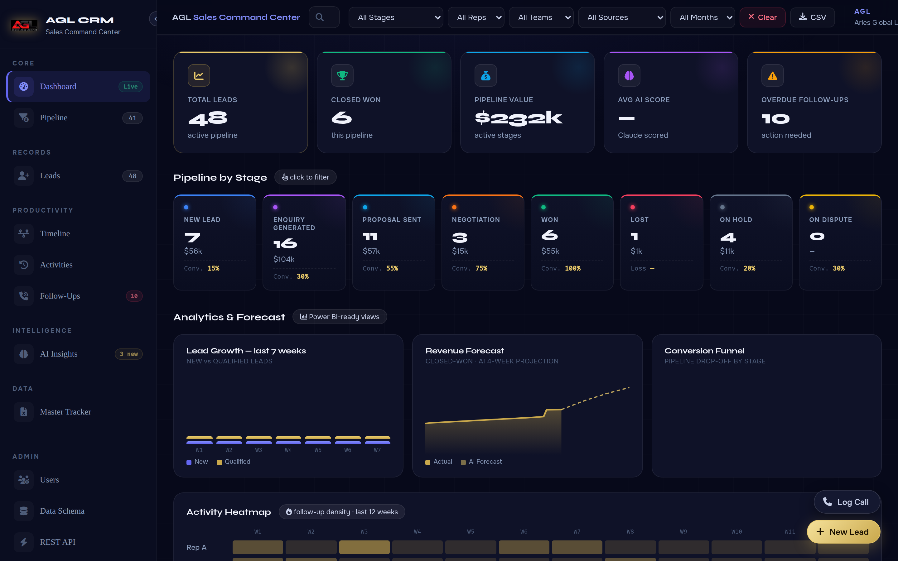
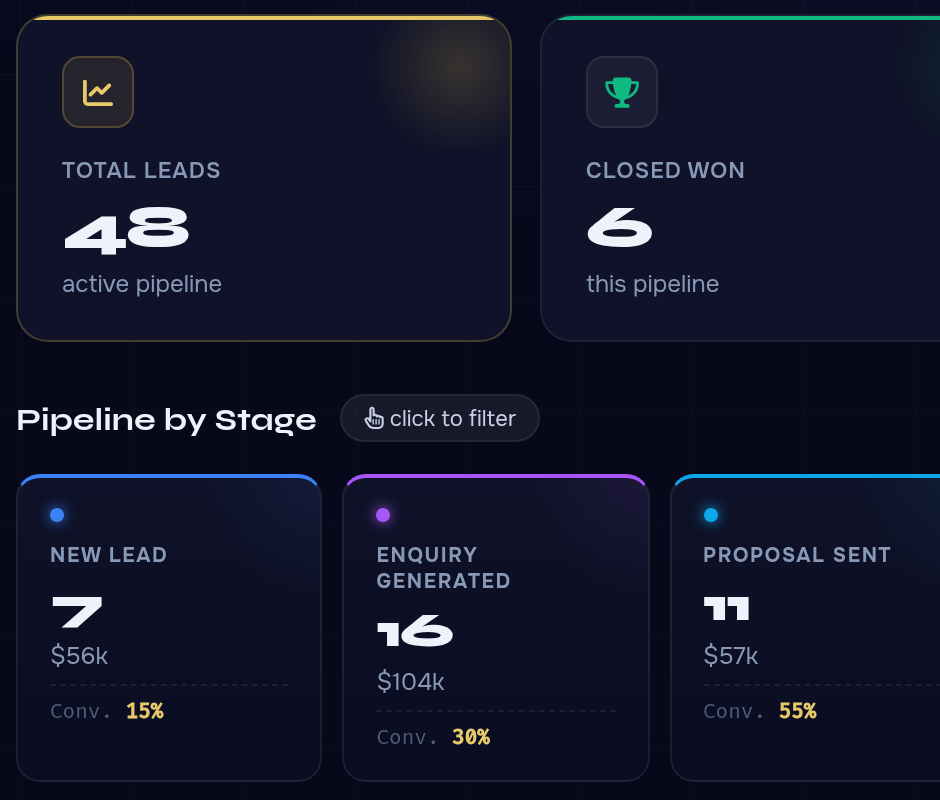
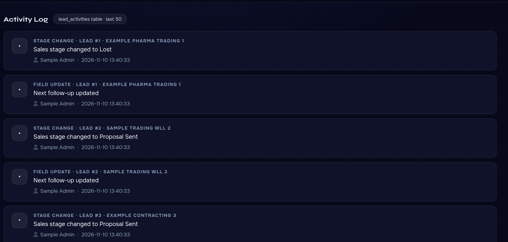
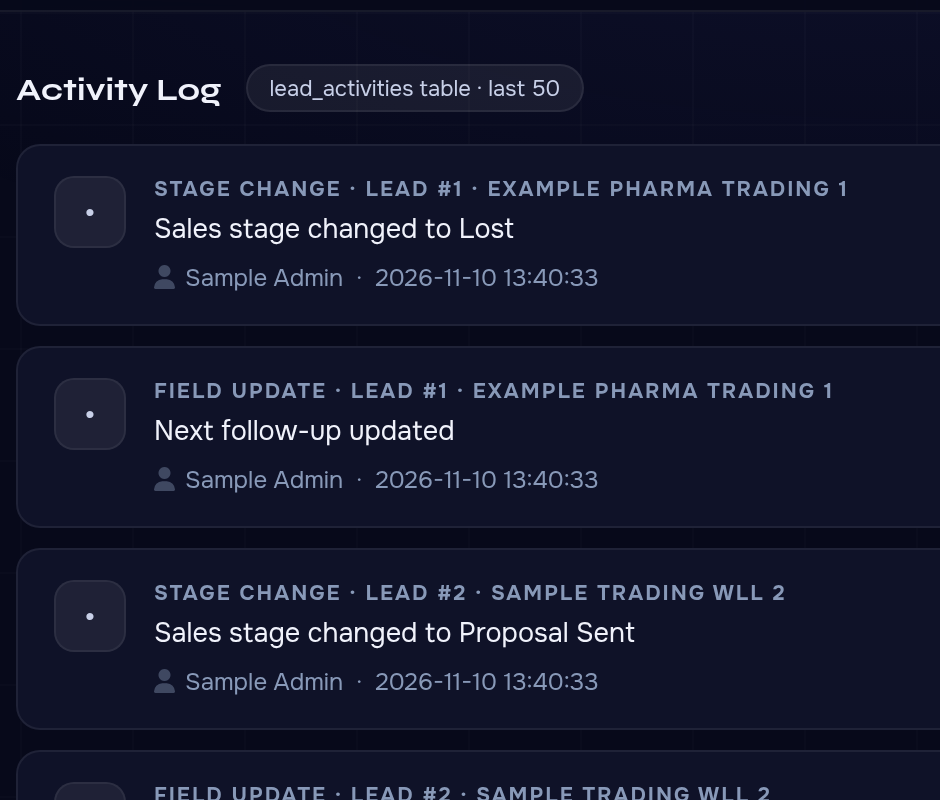
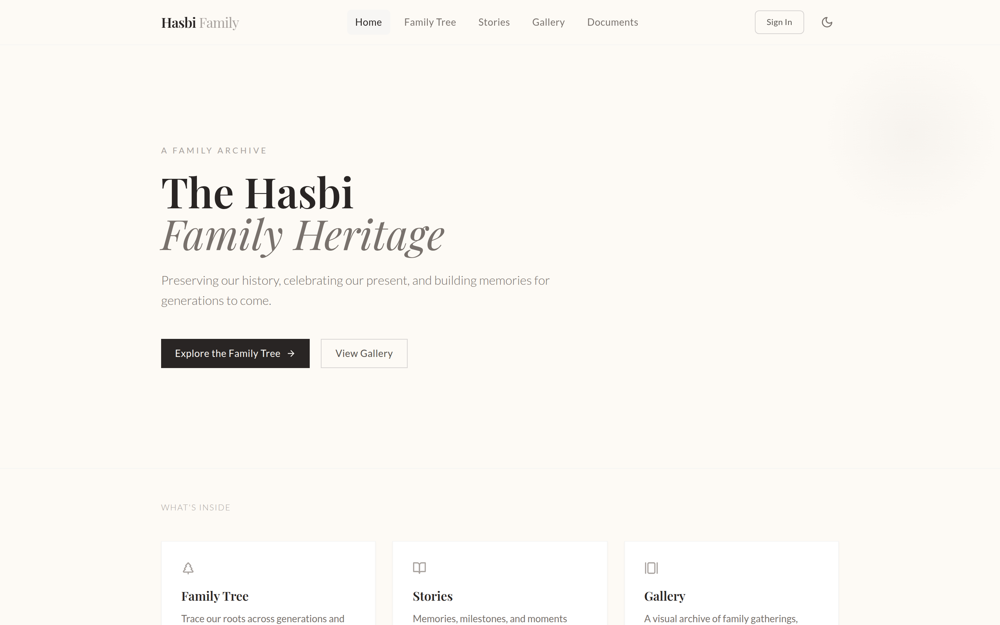
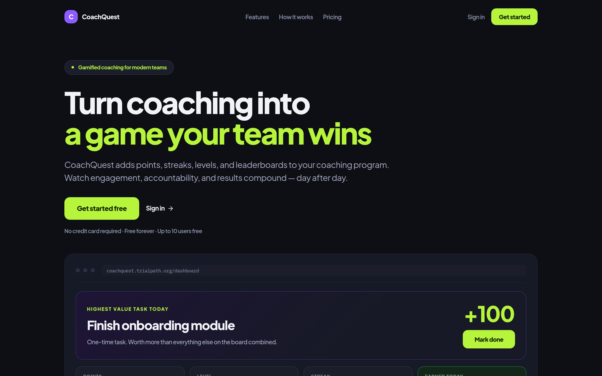
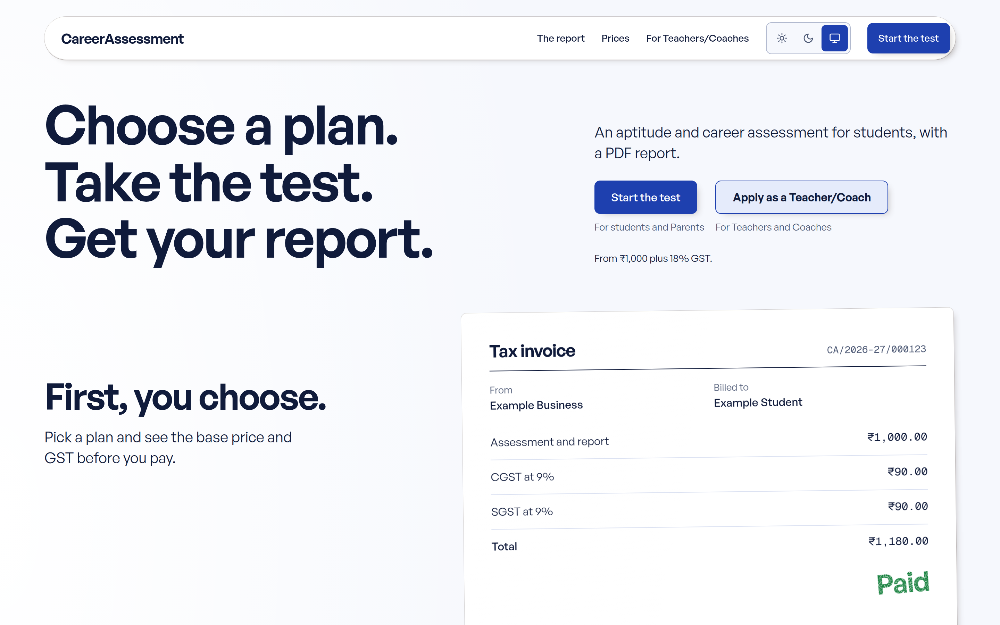

I turn
messy work
into working
software.
Software engineer and final-year CSE student at TKM College of Engineering

Hi, I’m Mahmood
Turning pain points into software people rely on daily
Most of my work starts with a slow manual process. I build the software that replaces it, then keep it running and improving.
I’m Tech Head at Cyphyx, an early-stage startup, where I run production of its apps. I mostly work with React, Node.js, Python, PostgreSQL and Docker, and I build Android apps in Kotlin.
One CRM for three sales desks
Each desk at Aries Global Logistics kept its own spreadsheet, so managers never had one clear view of their leads. I built them one system in Python and Flask.
-
Merge the trackers
3× trackers
I merged the three trackers into one database with 36 columns, fixed the columns that didn’t match and removed the duplicates.
- Qatar desk tracker
- Dubai desk tracker
- MSC desk tracker
One web CRMabout 2,540 leads Build the workflow
1× dashboard
Staff can add leads, track each stage, get follow-up reminders and export reports. Managers get a live dashboard.
Keep Excel working
1× two-way sync
It syncs both ways, so anyone who prefers their spreadsheet can keep using it.
Lock it down
1× login each
Everyone has their own login and permissions. Entries are checked, deleted records can be restored, and every field change is logged.
- Every sales stage tracked
- Follow-up reminders
- Reports to export





What comes next
I planned a move to FastAPI and PostgreSQL so it can grow.
Live apps you can open now
Try them yourself. The web apps run on React, Supabase and Vercel.

Hasbi Family Platform
A private family site with a family tree, a cloud photo gallery and role-based access. I designed, built and launched it.
React, Supabase, Vercel
Open Hasbi
CoachQuest
Turns coaching programs into a game with points, streaks, levels and leaderboards.
React, Supabase, Vercel
Open CoachQuest
Career Assessment
Students take an aptitude and career test and get a PDF report.
React, Supabase, Vercel
Open Career Assessment
Also built
AI customs document service
Reads shipping documents for Aries Global Logistics. A person checks every result.
Company forms
Open appA form app that works by invitation, with an admin area.
React, Supabase, Vercel
WatchNav
View on GitHubSends directions from your phone to your smartwatch over Bluetooth LE.
Kotlin, Bluetooth LE
SARS
Lets people report stray animals for rescue, with the location attached.
Kotlin, Firebase, GPS
A dataset bigger than its disk
Final-year project: 0.76 TB of medical images processed on under 2 GB of disk.
Download
26× faster
My parallel downloader fetches each slide and can resume if interrupted.
Stream
0.76 TB
Streamed in Python through less than 2 GB of disk, piece by piece, with no failures.
Process
7× checks
Automated checks verify every run. They caught four hidden bugs early.
Model
AUC 0.995
Scored on CAMELYON16, a public set of lymph node slides used to test breast cancer detection.
Every result is saved with the exact code version that produced it, so it can be reproduced.
Experience
- Present
Tech Head, Founding Team
Cyphyx, a young technology startup
I lead the technical side of the founding team and look after our apps from build to release.
- May 2026 to Jul 2026
Software Engineer Intern
Aries Global Logistics, Doha
I built and deployed the CRM and the customs service, then supported them while working directly with the sales and operations teams.
- Jun 2025 to Jul 2025
IT Intern
Ncell (Axiata Group), Nepal
I built live Grafana dashboards, improved Prometheus alerts and ELK logging, and moved log pipelines into Docker on a production network.
- Jun 2024 to Jul 2024
Web Development Intern
TS Qatar, Doha
An internship covering HTML, CSS, JavaScript, SASS and React.
Education
- B.Tech, Computer Science and Engineering, TKM College of Engineering, Kollam (KTU)
- Expected 2027
Certifications
Leadership
- Executive Committee Member in Google Developer Group (Tech), FOSS (Tech) and IEI (Tech), TKMCE
- School Leader, Rajagiri Public School, Doha (Leadership Honors)
- Maths Club Secretary, Gurukula Public School
Languages
- English, fluent
- Arabic, working proficiency
- Malayalam, native
- Hindi, fluent
Tools I reach for
I use Claude Code daily, and every change it generates is reviewed and tested before it ships.
- JavaScript
- Python
- React
- Node.js
- Flask
- PostgreSQL
- Supabase
- Docker
- Kotlin
- Playwright
Also FastAPI, Express, Firebase, Gemini API, GitHub Actions, Grafana, Prometheus, ELK, Linux and Vercel.
- Phone
- +91 95444 99312
- mahmood-abdul-razak
- GitHub
- mahme05